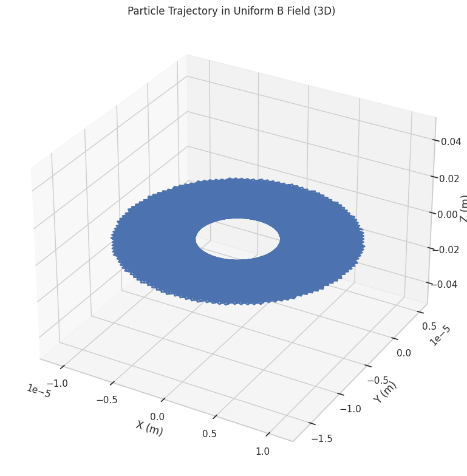
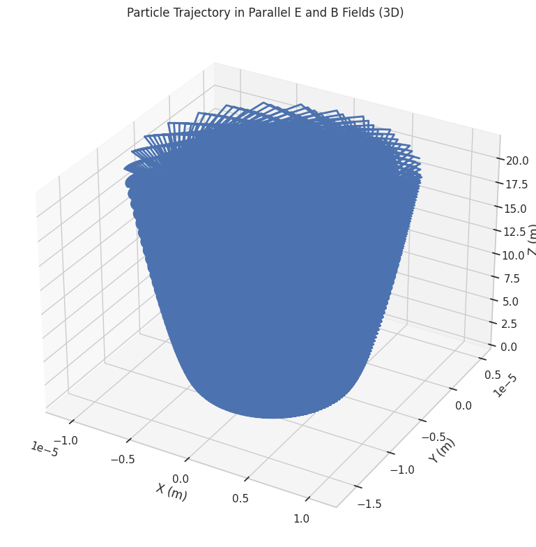
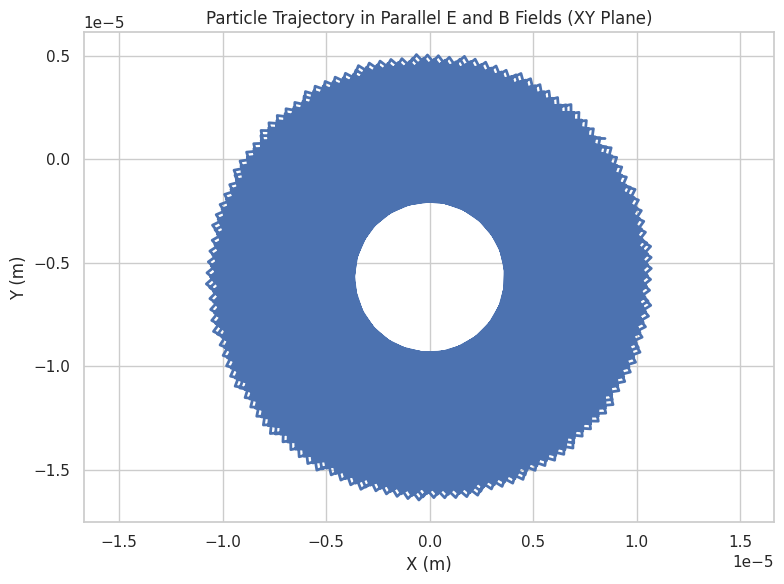
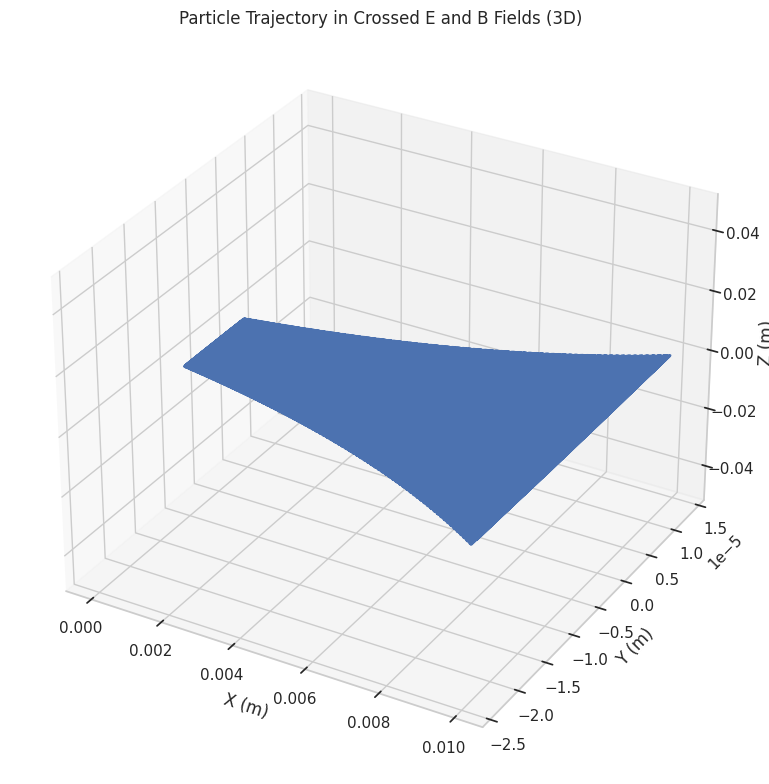
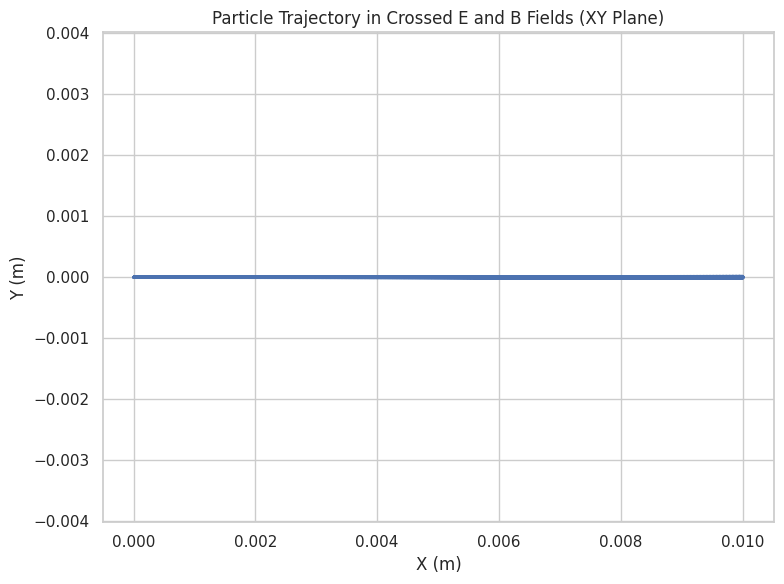

Electromagnetism: Lorentz Force Simulation
Problem 1: Simulating the Effects of the Lorentz Force
Motivation
The Lorentz force, given by F = q(E + v × B), governs the motion of charged particles in electromagnetic fields. This simulation explores particle trajectories in various field configurations, relevant to applications like particle accelerators, mass spectrometers, and plasma confinement devices.
Implementation
import numpy as np
import matplotlib.pyplot as plt
from mpl_toolkits.mplot3d import Axes3D
from scipy.integrate import solve_ivp


class ChargedParticle:
def __init__(self, q=1.6e-19, m=9.11e-31, v0=np.array([1e6, 0, 0])):
self.q = q # Charge (C)
self.m = m # Mass (kg)
self.v0 = v0 # Initial velocity (m/s)
def lorentz_force(self, t, state, E, B):
"""Calculate the Lorentz force on the particle"""
r, v = state[:3], state[3:]
F = self.q * (E + np.cross(v, B))
return np.concatenate((v, F/self.m))
def simulate_trajectory(self, E, B, t_span=(0, 1e-8), dt=1e-11):
"""Simulate particle motion using Runge-Kutta method"""
initial_state = np.concatenate(([0, 0, 0], self.v0))
t_eval = np.arange(t_span[0], t_span[1], dt)
sol = solve_ivp(self.lorentz_force, t_span, initial_state,
args=(E, B), t_eval=t_eval, method='RK45')
return sol.y[:3].T, sol.y[3:].T, sol.t
@staticmethod
def plot_trajectory_3d(pos, title):
"""3D visualization of particle trajectory"""
fig = plt.figure(figsize=(10, 8))
ax = fig.add_subplot(111, projection='3d')
ax.plot(pos[:,0], pos[:,1], pos[:,2], lw=2)
ax.set_xlabel('X (m)')
ax.set_ylabel('Y (m)')
ax.set_zlabel('Z (m)')
ax.set_title(title)
plt.tight_layout()
plt.show()
@staticmethod
def plot_trajectory_2d(pos, title):
"""2D visualization of particle trajectory"""
plt.figure(figsize=(8, 6))
plt.plot(pos[:,0], pos[:,1], lw=2)
plt.xlabel('X (m)')
plt.ylabel('Y (m)')
plt.title(title)
plt.grid(True)
plt.axis('equal')
plt.tight_layout()
plt.show()

# Simulation parameters
particle = ChargedParticle(q=1.6e-19, m=9.11e-31, v0=np.array([1e6, 0, 0]))
Case 1: Uniform Magnetic Field (Cyclotron Motion)
# Case 1: Uniform B field (cyclotron motion)
B = np.array([0, 0, 1]) # 1 Tesla in z-direction
E = np.array([0, 0, 0]) # No electric field
pos, vel, t = particle.simulate_trajectory(E, B, t_span=(0, 5e-8))
# Calculate theoretical values
omega = particle.q * np.linalg.norm(B) / particle.m # Cyclotron frequency
r_L = np.linalg.norm(particle.v0[:2]) / omega # Larmor radius
print(f"Cyclotron frequency: {omega:.2e} rad/s")
print(f"Larmor radius: {r_L:.2e} m")
particle.plot_trajectory_3d(pos, "Particle Trajectory in Uniform B Field (3D)")
particle.plot_trajectory_2d(pos[:,:2], "Particle Trajectory in Uniform B Field (XY Plane)")

Case 2: Combined Electric and Magnetic Fields (E ∥ B)
# Case 2: Parallel E and B fields
B = np.array([0, 0, 1]) # 1 Tesla in z-direction
E = np.array([0, 0, 1e5]) # 100 kV/m in z-direction
pos, vel, t = particle.simulate_trajectory(E, B, t_span=(0, 5e-8))
particle.plot_trajectory_3d(pos, "Particle Trajectory in Parallel E and B Fields (3D)")
particle.plot_trajectory_2d(pos[:,:2], "Particle Trajectory in Parallel E and B Fields (XY Plane)")
 
Case 3: Crossed Electric and Magnetic Fields (E ⊥ B)
# Case 3: Crossed E and B fields (E ⊥ B)
B = np.array([0, 0, 1]) # 1 Tesla in z-direction
E = np.array([0, 1e5, 0]) # 100 kV/m in y-direction
pos, vel, t = particle.simulate_trajectory(E, B, t_span=(0, 1e-7))
# Calculate drift velocity
v_drift = np.cross(E, B) / np.linalg.norm(B)**2
print(f"E×B drift velocity: {v_drift} m/s")
particle.plot_trajectory_3d(pos, "Particle Trajectory in Crossed E and B Fields (3D)")
particle.plot_trajectory_2d(pos[:,:2], "Particle Trajectory in Crossed E and B Fields (XY Plane)")
 
Discussion of Results
1. Uniform Magnetic Field
- The particle executes circular motion in the plane perpendicular to B (xy-plane)
- The Larmor radius depends on particle velocity and magnetic field strength
- Applications: cyclotrons, mass spectrometers, and magnetic confinement in fusion devices
2. Parallel Electric and Magnetic Fields
- The particle follows a helical trajectory with increasing pitch
- The electric field accelerates the particle along the field direction (z-axis)
- Applications: particle accelerators, electron guns in CRTs
3. Crossed Electric and Magnetic Fields
- The particle exhibits E×B drift motion perpendicular to both fields
- The drift velocity matches the theoretical prediction v = E×B/B²
- Applications: Hall effect thrusters, plasma confinement devices
Extensions and Suggestions
- Non-uniform fields: Implement spatially varying B fields for more realistic simulations
- Relativistic effects: Modify equations for particles approaching light speed
- Multiple particles: Simulate particle beams or plasmas
- Time-varying fields: Study RF cavities or pulsed field devices
- Collisions: Add interaction terms for more realistic plasma simulations z This simulation framework provides a foundation for exploring more complex electromagnetic systems relevant to both fundamental physics and engineering applications.